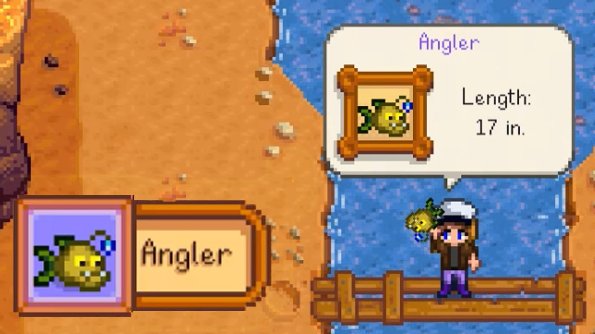

One of my proudest moments was helping to revive the Pelican Town Community Center, and now it's a hub for the whole town.
I put in countless hours of work, but it paid off in the end.

Wrangling the Legendary Angler
Catching the legendary Angler fish was one of my craziest moments last year. Fishing had always been just a hobby for me, and maybe luck was just on my side that day.